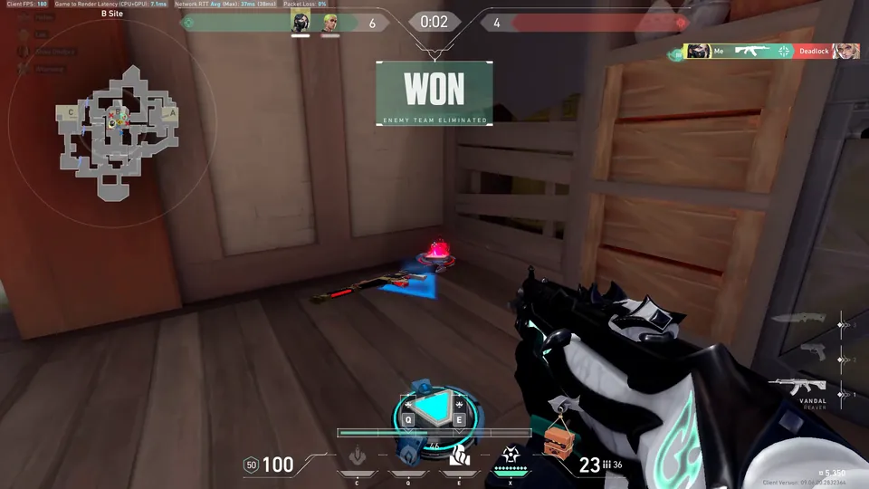
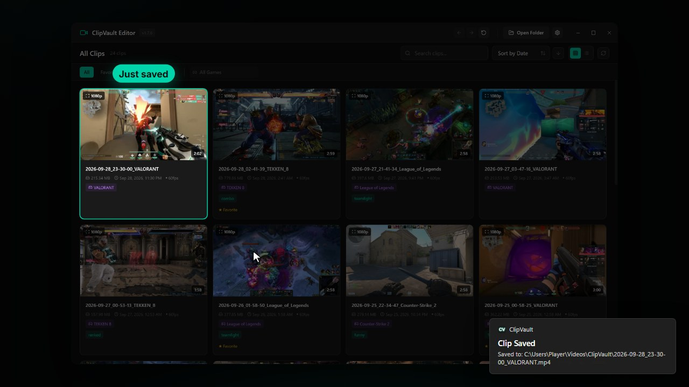
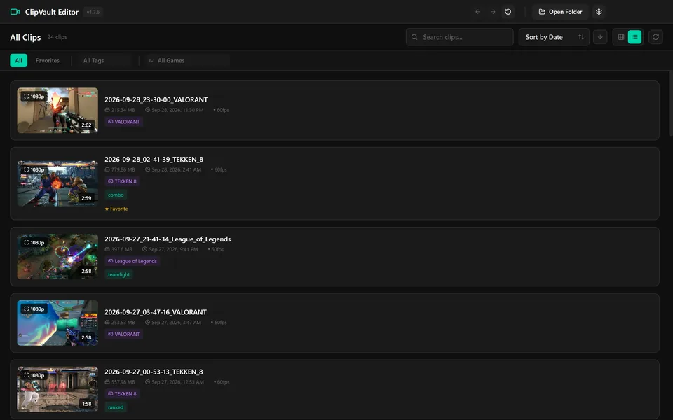
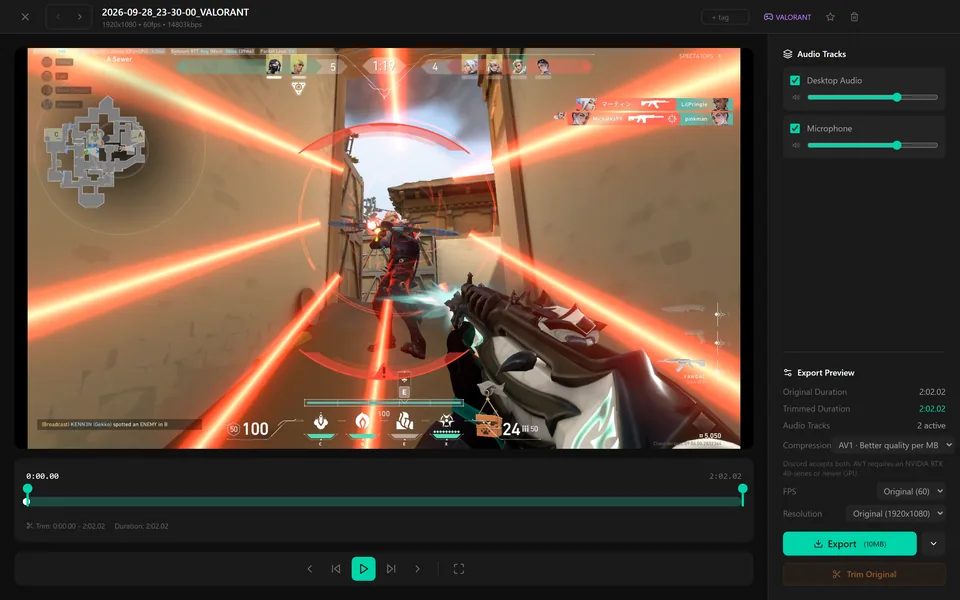
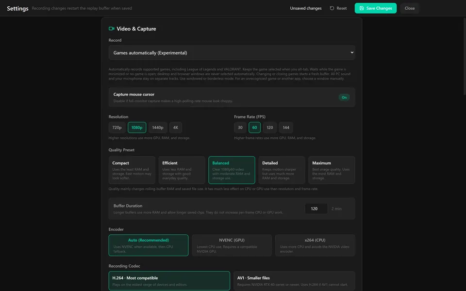
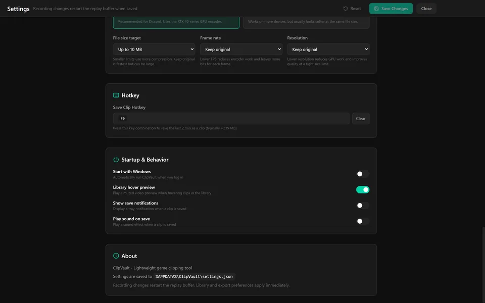

Press your hotkey. Keep the last two minutes.
ClipVault is a free game clipping app for Windows 10 and 11. It keeps a rolling replay buffer in the background. Press your save hotkey and the last 2 minutes are saved as an MP4, with game audio and your mic on separate tracks.
Free and open source (GPL-2.0-or-later). No account. Nothing is uploaded. Watch the 50-second tour
Clip properties
- Save key
- One key, set in Settings
- Buffer
- 2:00 by default
- File
- MP4 in your folder
- Audio
- A1 game · A2 mic
- Capture
- Monitor, no hooks
- Frame rate
- Up to 144 fps
One key writes the buffer to a file.
The replay buffer is always running. Your save hotkey writes what it holds to a normal MP4 in your clips folder.
00:10.00
Something happens. Press your hotkey.
The hotkey uses a low-level keyboard hook, so it works while a fullscreen game has focus. You pick the key in Settings.

00:13.40
Windows shows “Clip Saved”
A notification confirms the save and shows the path. The file name includes the detected game:
2026-09-28_23-30-00_VALORANT.mp4

00:16.70
The clip is at the top of the library
It appears right away with a thumbnail and its game tag, ready to open in the editor.

Find the clip without opening files.
The library shows every clip with a thumbnail, game tag, size and date. Search it, sort by date, size, name or favorite, and switch between grid and list.
00:20.00
Hover to preview
Clips play in the grid when you point at them, so you can check a moment before opening it.

00:24.60
Filter by game, tag or favorite
Detected games are tagged automatically. Narrow the grid to one game, one tag, or your favorites.

00:29.20
Grid or list
List view puts each clip on one row with its name, size, date and tags.

00:33.80
Change many clips at once
Select several clips to favorite, tag, add or remove a game, export or delete them in one go.

Trim to the moment.
Open a clip in the editor, set the in and out points, and export only that part.
00:38.38
Open it in the editor
The clip plays on the left with a trim bar under it. Frame-step and 5-second skip buttons help you land on the exact frame. Audio tracks and export settings sit on the right.

00:47.50
Tag it
Add tags such as “clutch”, mark the clip as a favorite, or change its game tag.
00:55.80
Drag the trim handles
Here the clip is cut to 0:38.38–1:04.18, 25.8 seconds around the WON banner. Playback stays inside the trim while you check it. Trim Original cuts the file itself in place.
This section’s clip on the page timeline runs from 00:38.38 to 01:04.18 too.

Game and mic on separate tracks.
Game and desktop audio record to one track, your microphone to another. In the editor you can turn either one off or change its volume before you export.
01:04.18
Mic off, game up
For this export the microphone track is off and desktop audio is turned up. A disabled track is muted while you edit and left out of the exported file.

Export to a size you can send.
Pick a size target and a codec, then export the trimmed part.
01:16.00
Up to 10 MB for Discord
- Keep original
- Up to 10 MB
- 50 MB
- 100 MB
H.264 is the most compatible. AV1 gives better quality per MB and needs an NVIDIA RTX 40-series or newer GPU. You can also set the export to 30 or 60 fps and 720p or 1080p.

01:22.00
Drag the file anywhere
When the export finishes, a small window shows the result. Drag from it to drop the file wherever you want it, copy its path, or open its folder.

Monitor capture. No game hooks.
By default ClipVault records your monitor with DXGI. It does not hook into games or inject anything into them, which keeps it anti-cheat friendly.
01:28.00
Monitor by default
Choose which monitor to record, the resolution, the frame rate, and a quality preset: Compact, Efficient, Balanced, Detailed or Maximum.

01:31.40
Or follow the game (experimental)
“Games automatically” records supported games only and follows the active game. “Monitor + automatic games” is also experimental, or you can pick one app window by hand.

01:34.70
NVENC or x264, up to 144 fps
- 30
- 60
- 120
- 144 fps
Auto uses NVENC on an NVIDIA GPU for the lowest CPU use and falls back to x264 on the CPU. Record in H.264 or AV1. The buffer length is set here too.

The whole app in 50 seconds.
Saving a clip, the library, the editor, audio tracks, export and capture settings. Captions are on screen and the video has no sound.
Questions
Is ClipVault free?
Yes. It is free and open source under GPL-2.0-or-later, and the source is on GitHub.
Does it upload my clips?
No. Clips are ordinary MP4 files in a folder you choose. There is no account and nothing is uploaded.
Does it hook into games?
Not in the default mode. Monitor capture uses DXGI and involves no game hooks or injection, which keeps it anti-cheat friendly.
Can I change the hotkey or the 2-minute length?
Yes. The save hotkey is F9 by default, changeable in Settings, and the buffer length is set there too. The first-run setup also walks through the clips folder, capture, audio and hotkey.
Do I need an NVIDIA GPU?
No. Auto uses NVENC on NVIDIA GPUs, which has the lowest CPU use, and x264 on the CPU otherwise. AV1 needs an NVIDIA RTX 40-series or newer GPU.
Which Windows versions?
Windows 10 and 11, 64-bit. It runs from the tray and can start with Windows.
What is it built on?
libobs, the engine from OBS Studio, plus an Electron and React app.

Install it. Press your hotkey when it counts.
ClipVault 1.7.6 for Windows 10 and 11. Free, open source, and your clips stay on your PC.